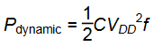

Логические вентили и проводники, соединяющие эти вентили друг с другом, являются конденсаторами и обладают определенной емкостью. Энергия, получаемая от блока питания, которую необходимо затратить на зарядку емкости C до напряжения VDD, равна C×VDD^2. Если напряжение на конденсаторе переключается с частотой f, то конденсатор заряжается f/2 раза (в процессе разрядки конденсатор не потребляет энергию от источника питания). Получается, что потребление энергии в динамическом режиме можно рассчитать как:

Утечка тока в системе происходит, даже если система находится в состоянии покоя (Idle). Суммарная величина тока, протекающего в системе в ее статическом состоянии IDD, называется током утечки (leakage current) или током покоя (quiescent supply current). Мощность, потребляемая системой в статическом состоянии, пропорциональна величине тока утечки и может быть рассчитана как:
Пример:
Сотовый телефон некоторой модели имеет аккумулятор емкостью 6 Ватт-часов и работает от напряжения 1,2 вольта. Предположим, что во время использования телефон работает на частоте 300 МГц и средняя емкость цифровой схемы телефона в любой конкретный момент составляет 10 нФ. При работе телефон также выдает сигнал мощностью 3 Вт на антенну. Когда телефон не используется, динамическая потребляемая мощность падает практически до нуля, так как обработка сигналов отключена. Но телефон также потребляет 40 мА тока покоя в любом случае, работает он
или нет. Рассчитайте время, на которое хватит аккумулятора телефона, для случаев:
(а) Если телефон не используется
(б) Если телефон используется непрерывно
Решение:
Статическая мощность Pstatic равна (0,040 А)*(1,2 В) = 48 мВт. Если телефон не используется, это единственное потребление мощности, поэтому время жизни аккумулятора равно (6 Ватт-часов)/(0,048 Вт) = 125 часов (примерно 5 дней). В случае, если телефон используется, динамическая мощность Pdynamic равна (0,5)*(10^–8 Ф)*(1,2 В)^2*(3 * 10^8 Гц) = 2,16 Вт. Общая мощность, являющаяся суммой Pdynamic, Pstatic и мощности вещания, составит 2,16 Вт + 0,048 Вт + 3 Вт = 5,2 Вт, поэтому время жизни аккумулятора будет равно 6 Ватт-часов/5,2 Вт = 1,15 часа. В этом примере фактическая работа телефона представлена в несколько упрощенном виде, но тем не менее, он иллюстрирует ключевые идеи, касающиеся мощности потребления.